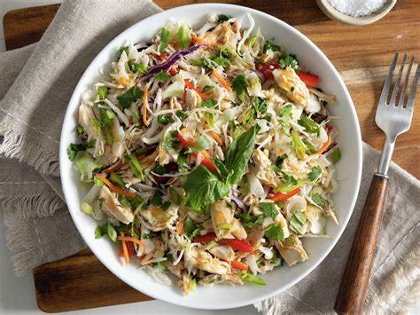

Sesame Ginger Chicken Salad
What is Sesame Ginger Chicken Salad?
Sesame Ginger Chicken Salad is a healthy and delicious salad that is perfect for lunch or dinner. It is a combination of marinated Asian chicken, cabbage, spinach, carrot, cashews, dried cranberries, and fried wonton strips, all tossed together with a delicious peanut dressing.
Ingredients
1/2 cup quinoa
1 tablespoon vegetable oil
1/4 teaspoon salt
1/4 teaspoon black pepper
1/2 cup vegetable oil
1/4 cup rice vinegar
1/4 cup honey
2 tablespoons soy sauce
1 tablespoon grated fresh ginger
1 garlic clove, minced
1 tablespoon sesame seeds
1/2 head Napa cabbage, thinly sliced
1/2 head romaine lettuce, thinly sliced
2 cups shredded cooked chicken
1/2 cup sliced almonds, toasted
1/2 cup matchstick-cut radishes
1/2 cup fried wonton strips
1/2 cup fried wonton strips
1 avocado, sliced
Instructions / How to Cook
1. Place a skillet over medium-low heat.
2. Add 1 tablespoon of vegetable oil. Add quinoa and spread onto a single layer.
3. Lightly season with salt and pepper.
4. Toast quinoa for 2 minutes before stirring.
5. Continue to toast for an additional 3 to 4 minutes, constantly stirring.
6. Transfer to a plate lined with paper towels and cool.
7. Combine both oils, vinegar, honey, soy sauce, ginger, garlic, and sesame seeds and whisk together until completely combined.
8. In a large salad bowl combine cabbage, lettuce, and chicken. Drizzle with 2/3 of the dressing and toss together.
9. Top with remaining ingredients and drizzle with remaining dressing. Serve.